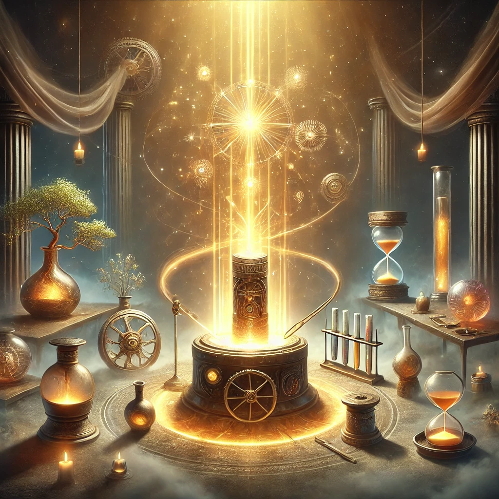

Ich, Samuel Hope, bin spezialisiert auf die Wiederherstellung von Lebenskraft, Bedeutung und Funktion – sei es bei Objekten, Lebewesen oder Materialien. Mit meiner einzigartigen Mischung aus Handwerkskunst, magischen Fähigkeiten und wissenschaftlicher Präzision widme ich mich der Erhaltung und Heilung von allem, was Ihnen am Herzen liegt.
Kunst der Wiederherstellung

Lebenskraft
In meiner Arbeit ist Lebenskraft der Schlüssel zu allem, was existiert. Jedes Wesen, jeder Gegenstand – alles trägt Lebenskraft in sich, die nicht nur das Leben ermöglicht, sondern auch die Identität, Bedeutung und den Zweck eines Objekts oder Wesens bestimmt.
Lebensessenz – Die Geschichte hinter den Dingen
- Herkunft: Die Geschichte eines Gegenstandes beginnt mit seinem Ursprung. Ein einfacher Holzstuhl etwa trägt die Lebensessenz des Baumes, aus dem er gefertigt wurde.
- Erlebte Geschichte: Mit der Zeit reichert sich die Lebensessenz eines Gegenstandes durch Erinnerungen und Erlebnisse an.
Leere – Der Zustand der Bedeutungslosigkeit
Was verursacht Leere?
- Verlust von Teilen, Funktion oder Identität
- Tiefe emotionale oder physische Schäden
- Abwesenheit von Sinn oder Lebensfreude